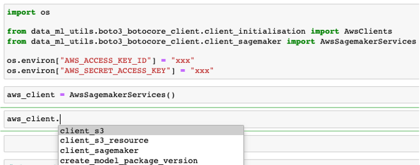

Client boto3 and botocore (sagemaker)¶
The sagemaker client class initialises botocore sagemaker (and s3) clients. It has some methods that interacts with AWS model registry by pulling and pushing model versions.
Environment variables¶
Before initialising the sagemaker client, we will need to define two environment variables; AWS_ACCESS_KEY_ID, AWS_SECRET_ACCESS_KEY
This can be the gandalf_dev_aws_keypair from KeyBase or your own AWS creds from ~/.aws/credentials
Defining the environment variables can be done through cli or in your .ipynb
cli
$ export AWS_ACCESS_KEY_ID=xxx
$ export AWS_SECRET_ACCESS_KEY=xxx
.ipynb
import os
os.environ["AWS_ACCESS_KEY_ID"] = "xxx"
os.environ["AWS_SECRET_ACCESS_KEY"] = "xxx"
Initialising sagemaker client¶
We will need to import the python package
from data_ml_utils.boto3_botocore_client.client_sagemaker import AwsSagemakerServices
And then initialise the class
aws_client = AwsSagemakerServices()
You can now access the sagemaker client with aws_client.
The initialisation of this class would have the SageMaker, s3 and boto3 session accessible too
Get approved model uri from model registry¶
This function retrieves the model artefact uri from s3 by specifying the model name in AWS model registry
A successful response return both the model artefact uri and the filename
aws_client.get_model_uri_from_aws_model_registry(
model_name="churn-model-high-value-cap"
)
Unzip approved model artefact from model registry¶
This function unzips the retrieved the model artefact uri from s3
A successful response return 0, and 1 otherwise
aws_client.unzip_targz_file(
file_targz="model_1644546288.tar.gz",
bucket_name_trunc="au-com-hipages-churn-prediction",
targz_file_uri="s3://au-com-hipages-churn-prediction/models/model_1644546288.tar.gz",
s3_file_path="models",
)
Upload model artefact to AWS model registry¶
This function uploads a model artefact (tar gz) to AWS model registry
A successful response returns the name of the model file
aws_client.upload_retrained_model_s3(
date_format="111",
bucket_name_trunc="au-com-hipages-churn-prediction",
s3_file_path="models",
model_suffix="model",
)
Create model package version for model name in AWS model registry¶
This function creates a model package version in AWS model registry. This is usually used for retraining or the first time we create a model.
A successful response return 0, raises an exception otherwise
dummy_dict = {
"test_retrained": "0.8",
"test_current": "0.85"
}
aws_client.create_model_package_version(
model_name="churn-model-high-value-cap",
model_file_name="model_111.tar.gz",
current_retrained_model_metrics_dict=dummy_dict,
s3_directory="s3://au-com-hipages-churn-prediction/models/",
image_uri="251259879778.dkr.ecr.ap-southeast-2.amazonaws.com/churn-prediction-ninetails:dev",
model_package_description="LSTM churn model for high value cap, >= 199",
)
See Client boto3 SageMaker API Specs for the api specifications of the above functions.